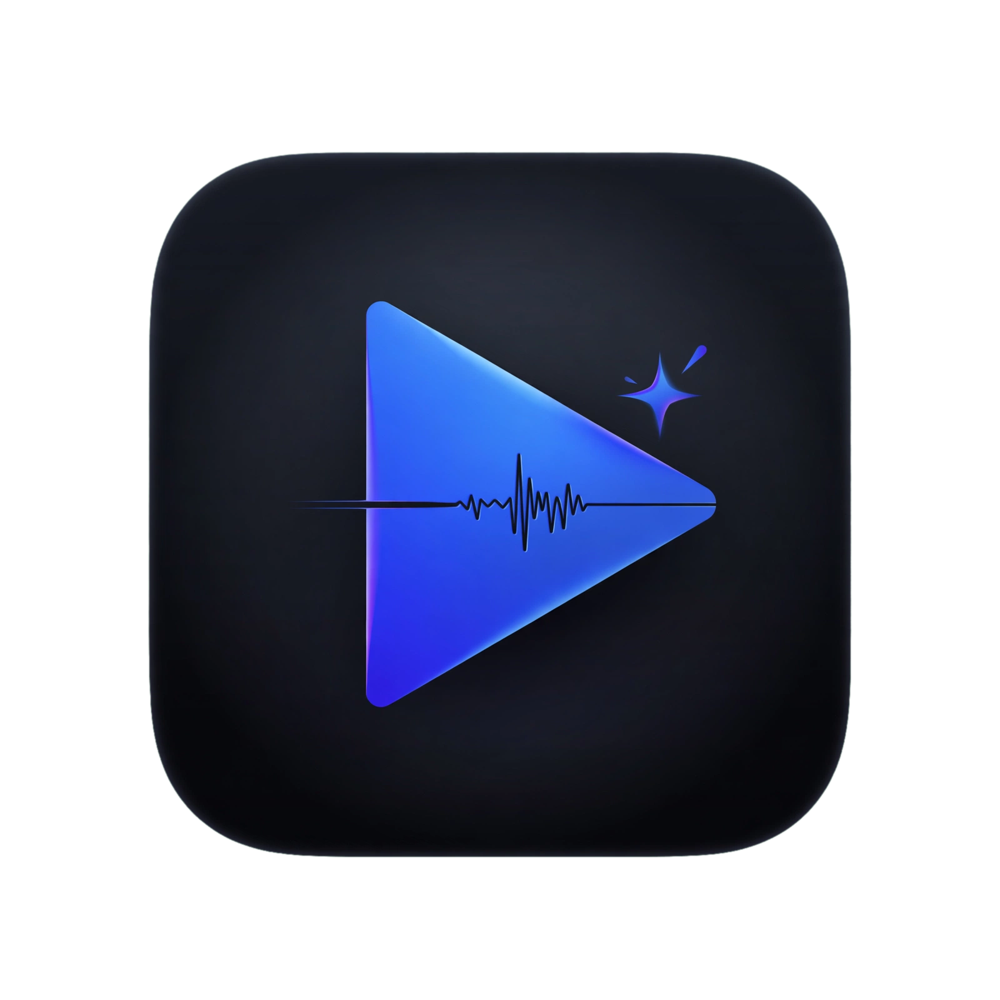
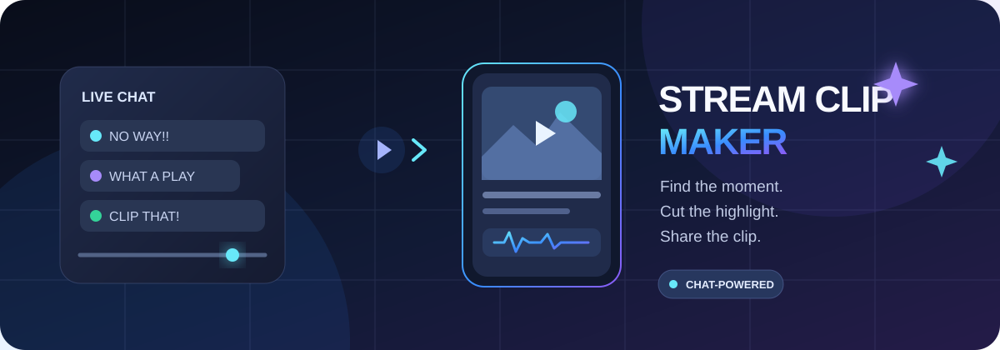

Linux x64
DEB for Debian/Ubuntu, RPM for Fedora, or AppImage for portable use.

STREAM CLIP MAKER
Turn Twitch and YouTube chat reactions into ranked highlights and vertical videos. Review every candidate, render locally, and stay in control.
Download desktop appExplore sourceDirect downloads from the public GitHub release. Linux and Windows desktop builds are supported. macOS users can use the guided TUI.
DEB for Debian/Ubuntu, RPM for Fedora, or AppImage for portable use.
Choose the MSI package or standard EXE setup wizard.
No native macOS desktop installer in v0.1.0. Use the cross-platform guided TUI.
Load TwitchDownloader JSON or YouTube live-chat replay.
Score unique chatters and reactions to rank candidate moments.
Inspect suggestions and select the moments worth clipping.
Use FFmpeg locally to create 9:16 videos. Nothing is auto-published.
The native macOS desktop installer is not part of this release. The Node.js TUI provides the guided workflow on macOS, Linux and Termux.
git clone https://github.com/aplicandola-ia/chat-clips.git cd chat-clips npm install node cli.mjs # Advanced options node cli.mjs --help
Download this skills-only plugin package and import it through Plugin Creator or the plugin import flow available in your ChatGPT account.
Guides setup, desktop/TUI workflows, chat analysis, local rendering, rights checks and troubleshooting.
Analysis and rendering run on your machine. The app does not grant permission to reuse creator content and does not automatically upload or publish videos. Confirm rights and review exports before sharing.
Release notes & all filesGuía en español